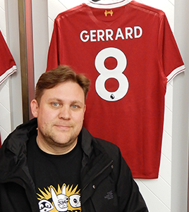
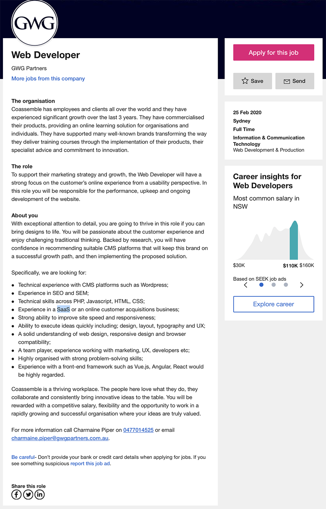

Everything. Knowledge is nectar. But favourites are;
Liverpool FC and football more generally. Liverpool is a city with people and a culture and a history entwined with that of the entire world. It is that that makes that club so appealing. Coming other than just a team dressed in red. Football is the closest thing to explain and reflect the human condition we have. From the simplicity of kicking a round object to the immense complexity of its social, cultural and political influences. It explains the world.
Arts and history. Tangible expression. I love the means of understanding thought and experience manifest in sculpture, in paint, or marble or wood or a game or a brick wall.
News and documentaries, some people read fiction and watch drama. That is all very interesting but the real world is filled with things happening right now that would blow peoples minds if only they took the time to hear about them. Sci-fi and Fantasy have their place, I really like them. Anything set in a modern or 'real' setting but is fiction I don't really see the point. The drama of reality is everywhere and I don't believe it helps people to escape into drama fiction and have empathy for an invented situation whilst so much real drama is ignored.
The world wide web has been around since I was adolescent, having seen it change everything I oscillated between fascination to the mundane usage.
It has always been something I wanted to be a part of yet have felt locked out of. The cost of computers and software has largely effected that. Always the immediate need of other things prevented me from follow this path.
Being someone who was often (and strangely when I think about) engaging in my love on computers and games through the pages of printed magazines I chose the career direction of printing and graphic arts.
I do remember the early days of incompatibility effected my experiences. IBM not compatible to Amstrad etc. I day dreamed of Atari ST and Commdore Amiga games whilst reading my friends magazines about them without ever playing them. I would go to the State Library in the CBD after school and watch older kids play games on green on green screens for hours.
Early influence was a friend in school had an Atari ST and wanted to make a game. He recognised my artistic talent and asked me to design 8 bit characters of a Seal and other sea creatures for his game. I did so. But never heard of the outcome or ever got to see the finished product. I should contact him on Facebook and see if he ever completed it. hahaha.
I have seen though out my previous career in printing and graphic design the growth of web design and development. I have seen some people embrace it and transition and other hold back. I have embraced opportunities but often found them limited and also recognised that skilling up or bettering my practice lay elsewhere within the immediacy of my working environments.
Then came web page banner advertisements, something I was being asked to put together. I was already working within Adobe Suite and loved animation. Flash was being turned into firstly Edge Animate and then into Animate CC. I had done a course in HTML5 and could understand enough to edit the code to get the banners to work. Between those two experiences I was illuminated that my future lay elsewhere. That whilst the software enabled me to put something together that was ok there was a whole world of creative interactivity that was possible with the understanding of the coding in the background.
I want to help create those interesting and sometimes overlooked additional elements of a user interface that make the ordinary into something extraordinary.

This organisation is an online learning service that design and implement training programs.
In the role I would implement backend development of the UX UI strategies as well as the ongoing maintenance of the existing platforms.
There seems to be some scope for guidance into different CMS (Content Management Systems) and an understanding of these along with the pro and cons of each system would be key how best enable clients/stakeholders to implement future content.
I believe that engaging web interfaces are a huge and fascinating growth area for web design and development. It is the fact that interactivity can be included that firstly can accommodate different learning styles but also is the reason why someone would opt for this method over a trainer or book. Yet also in combination to those as well.
As a web developer I believe it would be my role to set the CMS so that it can be then implemented by an educator or member of admin staff. Understanding ways to incorporate and maintain brand and styles as well as easy of addition of new or amended content. Training is certainly never a static thing and building in flexibility would be paramount.
Experience with SEO and SEM, whilst almost a specialised field in it’s self too few websites ever meet basic levels of this. If this is either for the organisation itself or as a part of the implementation plan of a clients site the need to be able to drive business in your direct is extremely important. Maybe they won’t need the marketing team.
Core skills of PHP, Javascript, HTML and CSS, this is like being a chef and not knowing what a vegetable was. These are the building block of any website.
SaaS being as a requirement for this position is an insight into the companies business model. Creating the software and maintaining it on a licence through subscription would be a very lucrative way to sell. It is something that many large companies now do, e.g. Adobe, Microsoft.
Improvement of site speed and responsiveness is an interesting request. Whilst to some degree how the application or site can be effected by how it is put together these things are always with the developers hands. But good house keeping in the area is not a bad wish list item.
Obviously there is a team in place with different people contributing. Web development is the point that these come to together. So being able to understand and execute the desired look, feel, intent of all those contributing team members is a huge responsibility and core to the success of the whole.
Web development has numerous competing front end frameworks. Being across these and being able to implement one or the other would certainly be an imperative. These are all growing and expanding as well as competing. This would then in could a need in this role or others like it to have a sound knowledge of each the ongoing changes and usage for best implementation for both you organisation and any clients.
I have along way to go and this exercise has definitely highlighted that for me. I have a rudimentary understand of HTML and CSS. I feel it picked those up quickly although it was a while ago that i did so. I am really look forward to adding Javascript and add all the interactivity that can bring. Also linking them together I believe will bring a feel of accomplishment.
I have worked with a Wordpress site and had exposure to Drupal again things I believe I had a sound understanding quickly.
I have a background in Graphic Arts so feel that design, layout and typography are solid. I recognise that I am likely to encounter that this organisation will have someone in that role yet I feel I could use my background understand their reasoning and perspective and maybe even compliment them in its execution.
Some years ago I completed an online course on UX and at least feel I have an understanding far greater than most. I feel as though many people think it is only what the acronym describes and expect it to be a knowledge based field when it is a lot more data and analysis process.
Well the plan at the moment is to study Bachelor of IT at RMIT unsurprisingly. I believe amongst the courses and electives I am able to skill up in many of these areas. As I progress I believe I will need to locate and take up every opportunity to put these into practice as possible. A lot of people of all walks of life are in need of a web presence. There are sites that can deliver a generic templated outcome but many either require something a bit more bespoke or do not have the time or inclination to do it themselves.
Being able to have the skill base I already have and by further adding what is outline in this job description I may be able to skip the job and go into business myself. Is that a better outcome? When I remember that this is but one cog in a large organisation of many roles maybe not.
I am not a big believer in these tests. Humans are way too complex to be categorised. For me every question could have a different answer in relation to its timing and context. I believe they are an attempt to quantify the unquantifiable. Businesses and the people charged with make personal judgements are require to have some supporting evidence to aid their accountability of their decisions.
Myers Briggs is proven to be pseudo science.
Vox.com has an excellent explaination of Myers Briggs and its origins.
The results are never going to tell horrible people they are horrible because at the end of the day that opinion is subjective and is dependent on context.
We are not all multi personality but we certain adjust personality traits based upon the circumstance we find ourselves in.
Further it is a self assessment, something I believe people are generally not very good at doing. I ask you what results Donald Trump would get from his personality test versus what our world would give him?
In contrast of everything I have just written, I am a firm believer in reflective self assessment. I regularly consider my actions and look for understanding of other peoples perspectives. This is especially so when I am working within a team environment. It does not really happen by choice or by any particular intention to do so. It just happens at random points within the next day or so.
I don’t believe that I always gets results or it changes my behaviour. I just think it is important to review your inputs and with the distance of time consider others outputs.
Recognising that teams are fluid they are every changing as are their goals. Different people bring very different things into teams and have differing levels of engagement to the team or project. Understanding this is integral to the success of the teamwork as well as the success of it goal.
I believe very little. I suppose conceptual it identifies that people as different and have different strengths and weaknesses. These then can be applied to the team dynamic yet I would have to say that it is the very fact that the individual is being placed into a team my change their characteristics around hierarchies, familiarities, specialisation etc. To some degree the is the complexity of have a management position and a unique skill set to identify these and implement them. Often like a poker hand you have to do the best with what is give to you with the unlikelihood of being able to assemble an Ocean’s Eleven style team from scratch.
The important thing I believe is probably a Japanese style world view. Everyone has a part to play both big and small and your contribution is both necessary and valuable. It is the collective that must have a shared intent of the overall best outcome. Consideration of being one piece of many and how you fit to the overall.
My idea is to create a CMS (Content Management System) for a reinvented web page presentation. Breaking away from tradition webpage layouts and popular templated parallax scrolling sites. This is in order to accommodate different types of story telling and news. This will also change the way it is periodical delivered and updated. Presenting content and indeed advertising in a more refined manner. Firstly I would need to establish the stylistic layout and interactive features in order to demonstrate and popularise this new presentation format. This stylistic change would take cues from magazine layouts and CD-rom navigation of previous years.
Initially this would be it’s own web site or sites of differing topics. The develop of the CMS to then create a SaaS, licensing and subscription framework to allow organisations and freelancers to produce their own content.
Something that gives me a passionate response is the way the internet and web pages have killed magazines. I loved magazines of all kinds. They have been replaced by webpages and social media but neither really do what a magazine did.
I believe that the world is worse off for information as a bite size post. Having a medium through which differing bits of information were accumulated and analysed before being presented as a stylistic whole was extremely important. Having a group of people independently gathering that related information of one topic of interest is lost to the clinical output of marketing and communications departments of brands. Websites of course have longer and shorter content, yet they really exist in that format. Maybe a picture is place in line or a video link not really delivering on the promise of everything that information delivered in a digital format could be.
The IT innovation I would like to see is a place for a different form of presentation of information that breaks the establish hierarchy of web site design. This does exist and has existed at various times in various ways. Apps have some promise in this area but the ones I have seen have come and gone. I once heard the biggest challenge for app designer it that ever device has a web browser so any innovation in this area has to be web page based.
This idea would require two phases.
The first would be the establishment of a web site that embodies the new presentation style and establishes peoples understanding of a new web page architecture. It would use an issue based model. The first having a landing page presented in similar style to a magazine cover. Responsive design would be a key aspect of this entire project. Presenting the ‘Cover’ in different layouts based on the device or browser it is being viewed from. From the second issue the landing page would take on a magazine rack style layout with users being able to then go into the previous and current issues.
From the cover you could click straight through to the article that is of immediate interest. Page turning could involve a unique type of finger gesture or for desktop an animated roll over button. Current web pages have conditioned people to browser the stories on offer, gain a one or two line idea of its content and then click through of scroll on. I believe that leads to the passing over of possibly interesting of reliant content for that user. If each item is given an accompanying image and a great staging say be a roll over that enlarges that story a great click through rate maybe achieved.
Now instead of advertising invading the space of web pages with banners and backgrounds they could return to full page layouts. This presents an exciting new opportunity where sound, video, and animation could be utilised. This is of course true of the article content but undoubtedly the appeal for advertisers to be afforded the entire space would be appealing. Yet as a user I could click past it rather that having to sit through it like so much web content does these days. I assume the market would determine how that aspect of this idea would play out.
Screen resolution on all devices is now quite substantial yet current use of photos and even video is under utilised in my opinion. Photos are inserted into the body of the text and often enlarging the page creates resolution to drop and if you are able to click through to a viewer it still has limitations. This would give prominence to the image and enable compliment text to be enlarged to support the image. Insert photos can be inverted into the larger frame and vice versa. Giving the user a sense of engagement with the page. Images could be shot sequentially and supporting text appears as each image is shown.
The second phase would involve taking these page layouts and templating them. Enabling the set up of a bespoke application of this style of website. Individuals, freelancers indeed companies could download the CMS and choose an entire layout or individual page styles to then insert image, text, video, infographics, animations, etc. Once complete it could be packaged up and uploaded onto a new web server as a stand alone site or even added to existing sites for additional content.
I can see this being used for catalogues, education manuals, how to’s, basically any application that you would want interactivity and a need to display information in a curated fashion without AJAX style input.
I believe this has already existed in many different parts in many different places. PHP, HTML5, variations of CSS and Javascript offer all sorts of interactivity and innovation in web site design that just are not being implemented enough. So this system would identify those and establish a means to bring these to a wider audience and enable less code savy people in implement exciting web page interfaces.
Phase one would relay heavily on R&D process, research into how it will be implemented through the huge variety of web interfaces both mobile and desktop. Even looking into newer ones like vehicle, home even smart TV. Use of gif like images or short form videos and their use would be essential.
So my project would entail putting together a CMS for magazine style presentation of web pages with an emphasis on interactive content. Embracing its digital format and enhancing the information rather than the ad content. Setting up new structure for a different style of web page. One that stylistically breaks convention of web page presentation. Not to do away with standard websites but to offer something different for longer form reading. I do recognise that Wix, Wordpress, Drupal etc all are similar ideas. The point of difference lays in the separation from standard or existing website layouts that lend themselves to a direct delivery of information. My idea is a tool for storytelling.
From this article I have gained some understand or the complexity of choosing the right coding language to develop my CMS. Although this has given me an outline I believe the one that can best accommodate my idea will become apparent as I encounter each in my phase one and career development.
Importantly the job I have researched and the one I believe I am most interested in doing is the one that will aid me on the path of development.
The very fact that all the stated knowledge and experience will give a solid basis within a business focused on educational resources for the web. In some ways they are potential customers and or partner in the sale and uptake of this technology. I could learn a lot because my idea closely alines with their business model.
Learning Java and PHP will enable me develop the software to create the CMS. Whilst having an ever increasing understanding through working as a Web Developer and exploring the integration of PHP, Javascript, HTML5 and CSS. It is with out a doubt a core stepping stone for this idea to implementation by firstly producing this style of web page through these methods before setting up the CMS for a wider use.
I only what to change how information is accessed on the web. Firstly I want people to become excited about content of talented people again. The project will be measured in the number of users that can access the CMS and start their own publication. That they can experiment and push the envelope of what is possible with web content. I would like to see a large user participation with everything from music and popular culture fanzines to high end fashion magazines using this service.
I believe this be important because the way that websites and social media have changed the way we consume information has reduced our way of receiving information. Somethings are more complex than 26 characters or a group of hashtags. When something is given to us in the current format it has become hard to consume.
Observe any person looking at their Instagram or Facebook and pictures and text are consumed at great speed. With each piece of information never holding the screen for longer than a few seconds. I think that is a key challenge to this approach but not an insurmountable one.
I believe that because I am thinking of this as a CMS it gives opportunity for the type of innovation in application that will draw creative people together and drive growth and uptick of the system.
My background as a creative and having worked on magazines gives me a grounding to look at what magazine presentation can do to inform web page design.
I fully recognise that reinventing the wheel requires a solid understanding of how a wheel works.